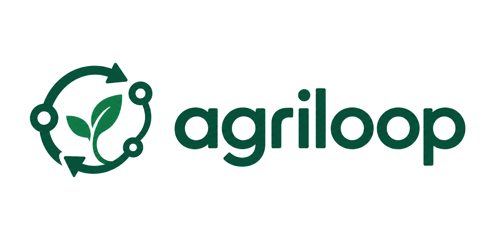

{{ toast.type === 'error' ? 'error' : 'check_circle' }}
{{ toast.message }}

AgriLoop Console
{{ isLive ? '系统在线 (UP)' : '仿真态 (MOCK)' }}
 {{ state.currentUser.username }}
{{ state.currentUser.username }}